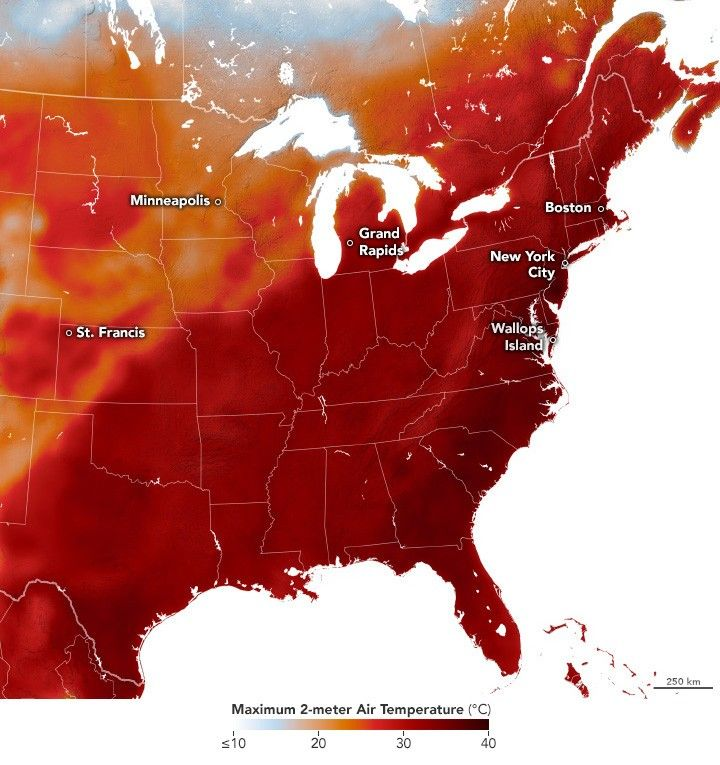

Sizzling Start to Summer
The astronomical start to summer was difficult to ignore for tens of millions of people in the United States in 2025. A heat dome brought several days’ worth of scorching daytime temperatures, coupled with high humidity and warm nights, to many central and eastern states. New temperature records were set in Minnesota, Maryland, Vermont, and many places in between.
This map shows air temperatures across the eastern U.S. on June 24, 2025, at 2 p.m. Eastern Time, modeled at 2 meters (6.5 feet) above the ground. It was produced by combining satellite observations with temperatures predicted by a version of the GEOS (Goddard Earth Observing System) model, which uses mathematical equations to represent physical processes in the atmosphere. The darkest reds indicate areas where temperatures approached 40 degrees Celsius (104 degrees Fahrenheit).
The extreme temperatures were due to a large area of high pressure in the upper atmosphere, often referred to as a heat dome, that traps heat and humidity in the lower atmosphere, meteorologists explained. Intense heat afflicted the eastern U.S. starting June 21, with the most hazardous conditions creeping eastward from the country’s interior over several days.
The National Weather Service issued heat advisories for broad swaths of the Midwest, Northeast, and Southeast on June 24, as well as extreme heat warnings for areas along the eastern seaboard from North Carolina to Maine. High humidity boosted the heat index to over 100°F in some places. The higher the heat index, which indicates how hot it feels when accounting for both temperature and relative humidity, the harder it is for the human body to cool itself.
Seven states in the Northeast—Connecticut, Maine, Maryland, Massachusetts, New Hampshire, Rhode Island, and Vermont—tied or broke monthly high temperature records on June 24. On that day, both Boston and New York City (John F. Kennedy International Airport) reached highs of 102°F (39°C), setting new June records for those places.
In the preceding days, central and midwestern regions felt the brunt of the extreme heat. On June 22, Eau Claire, Wisconsin, reached its warmest-ever daily low of 82°F (28°C), according to news reports. Grand Rapids, Michigan, and Wallops Island, Virginia, among other locations, set or tied June records for warm daily lows. Also on that day, Minneapolis, Minnesota, set a daily record high of 96°F (36°C), and St. Francis, Kansas, was the hottest place in the country at 104°F (40°C)—more scorching than Death Valley, California.